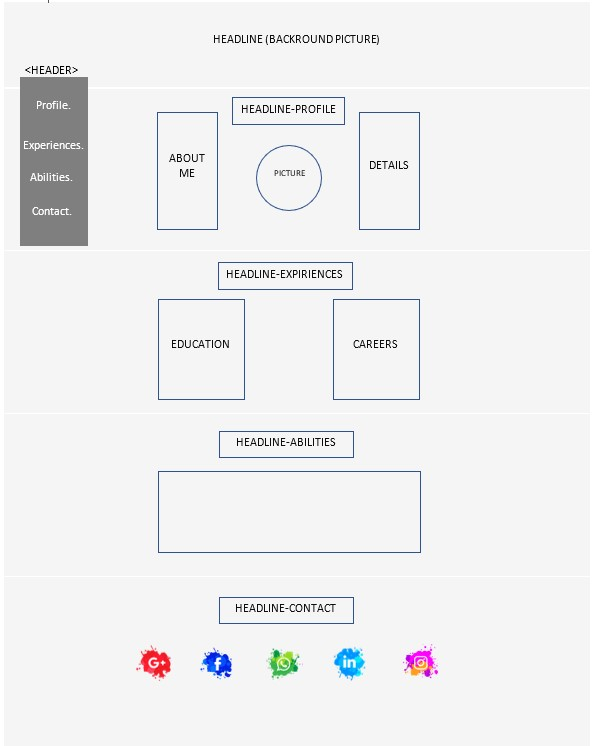

<!DOCTYPE html>
<html dir = "rtl"></html>
<html lang="en">
<head>
    <title>CV-Shir Lehrer</title>
    <style>body{background-color: lavender</style>
</head>
    <meta charset="UTF-8">
<body>
<h1>CV web site planning</h1>
<h2> Planning UX</h2>
<p>
    <ol>
        <li>קהל היעד של האתר הינו מגייסי עבודה וחברות</li>
        <li>מטרת האתר הינה הצגה ויזואלית של קורות החיים שלי</li>
        <li>המטרה המשנית הינה תכנון אינטואיטיבי ונגיש לחוויות המשתמש</li>
        <li>המשתמש יוכל להכיר תכנים לגבי, לעבור לדפי הרשתות החברתיות שלי דרך קישורים מתאימים ולהשאיר פרטי יצירת קשר</li>
        <li>מדדי ההצלחה הינם יצירת אתר נגיש ונעים לעין אשר יגרור מספר פניות רחב אלי והגדלת החשיפה שלי בקרב הגורמים הרלוונטים</li>
        <li>עולם התוכן אליו מכוון האתר הינו חיפוש עבודה כאנליסטית במגוון חברות הייטק בהתאם לעיסוק החברה</li>
    </ol>

</p>
<h2> Planning UI</h2>
<p>
<ul>
    <li>Questions 1-4:<br>
        </li><br>
</ul>
<ul>
    <li>סכמת הצבעים של האתר תהיה בצבעי Pastel:
        <ul>
            <li>Maximum Blue Purple (#B0B1E6)</li>
            <li>Beige (#F4F0D9)</li>
            <li>Tea Green (#D0EBB5)</li>
            <li>Celadon (#A5E0B6)</li>
            <li>Pearl Aqua (#88C9C8)</li>
        </ul>
    </li>
    <li>הפונטים בהם אשתמש:
        <ul>
            <li>"Havelberg Demo"</li>
            <li>"Comebro Unconnected"</li>
            <li>"Kiwi maru"</li>
        </ul>
    </li>
    <li>התמונות בהן אשתמש:
        <ul>
            <li>תמונת רקע</li>
            <li>תמונה אישית</li>
            <li>תמונות נוספות</li>
        </ul>
    </li>
</ul>
</p>
</body>
</html>